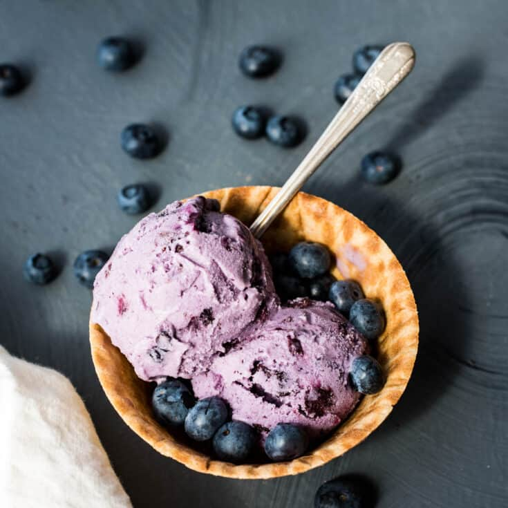

Peyton's BlueBerry Ice Cream

Description
This blueberry ice cream will add a sweet ending to any meal. It's best to make the base and chill it overnight before processing in your ice cream maker. Serve topped with fresh strawberries or raspberries.
Ingredients
- 4 Cups Fresh Blueberries
- 2 Cups Sugar
- 1 tbsp vanilla
- Text
- 1 cup whole milk
- 2 cups whipping cream
Directions
- Puree blueberries in blender
- Cook pureed blueberries & sugar in sauce pan & stir until sugar dissolves
- Refrigerate mixture until cold
- Add vanilla, milk, & cream to pureed mixture. Mix thoroughly
- Pour into ice cream maker & churn
- Freee to allow ice cream to set up & ripen